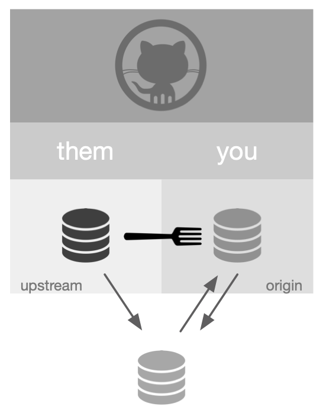
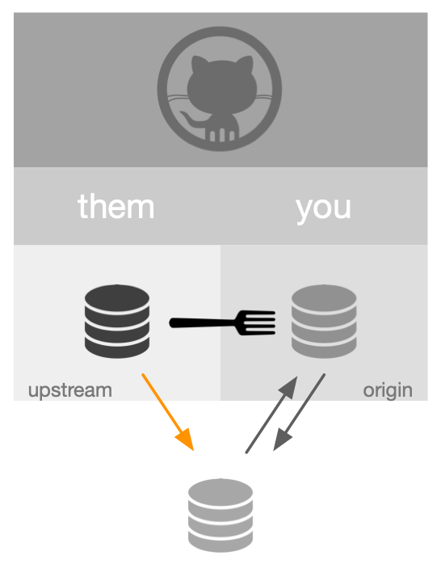
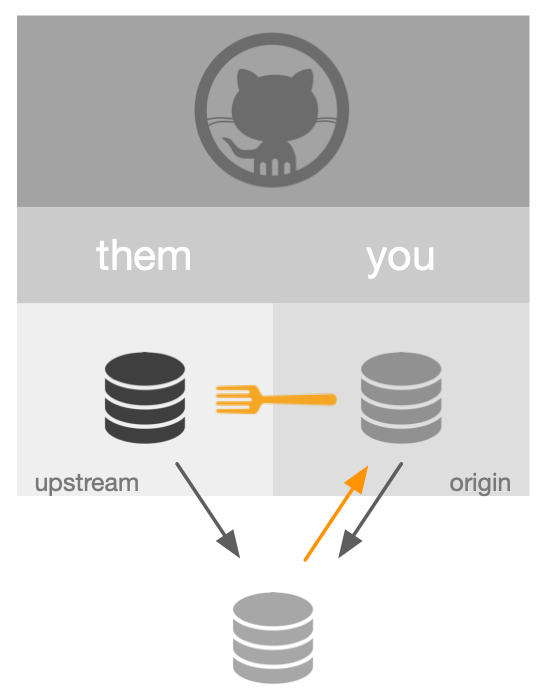

usethis::create_from_github("OWNER/REPO", "local_dir", fork = TRUE)Understanding pull requests
usethis
git
An attempt to get my head around pull requests based on the fork and clone model as implemented in the usethis package.
“Fork and clone” is the basis for issuing the “pull requests” that are the lifeblood of open source development on github in the R universe. The purpose of this What I Learned Today post is to understand this workflow from two levels:
- the git/github concepts
- the
usethishelper functions
Good reference information is found here.
Fork and clone
To begin a “fork and clone” within the “happygitwithr” / usethis recommended workflow, run:

This accomplishes three things:
A special copy, a fork, of
OWNER/REPOis made to your github account, referred to herein asYOU/REPO.YOU/REPOis cloned tolocal_diron your computer.git “remotes” are setup as follows:
- origin:
YOU/REPO, can push and pull - upstream:
OWNER/REPO, can pull, can’t push
- origin:
Best “pull request” practices dictate working on a local branch in order to avoid local merge conflicts and to ease the merge process for OWNER once the “pull request” is issued. To establish a local branch on which to do your work, run:
This creates and switches to a local development branch, local/dev_branch, that is separate from the local/main branch. The allows your local repo to incorporate changes in upstream, i.e. keep up-to-date with development in OWNER/REPO while you develop locally.
Develop
Local development
Develop as usual, committing to local/dev_branch as appropriate via git tools included with Rstudio.
Keeping up with OWNER
As necessary, and certainly recommended prior to issuing a “pull request”, pull down any changes happening on upstream/main by running:

This brings local/main up-to-date with all development on upstream/main. This should happen without any issue if you haven’t touched local/main, because that is where the updates are pulled to.
My current understanding is that this doesn’t perform any merge analysis between local/main and local/dev_branch.
Create pull request
When you are ready to make the pull request, run the following:

This accomplishes the following:
- pushes your changes to your forked repo,
YOU/REPO - launches a browser window with the github page of
OWNER/REPO - makes available the “pull request” option within github
At this point, you work with submitting the pull request on github. For the purposes of this post, assume the pull request is accepted by OWNER. You finish the pull request locally by running:
This once again brings local/main up-to-date with upstream/main, which now includes the changes incorporated in the accepted pull request. It also has the effect of switching back to the default branch, main and deleting the development branch dev_branch.
To make sure OWNER/REPO receives the changes of the merged pull request, in a shell run:
Summary
Notes
- Called a “pull request”, because at the end of the day,
YOUare askingOWNERto pull your changes into theOWNER/REPO. - “formal” names, like
OWNER/REPOand “aliases” likeupstreamhave been used interchangeably (sloppily?) to reinforce the concept that “aliases” are useful shorthand for “formal” names - My sense is that the forked copy that sits in
YOUis there largely for the purpose of being the basis of the pull request. In the documentedusethisworkflow,pr_push()is the only time thatYOU/REPOgets updated during development of the pull request.